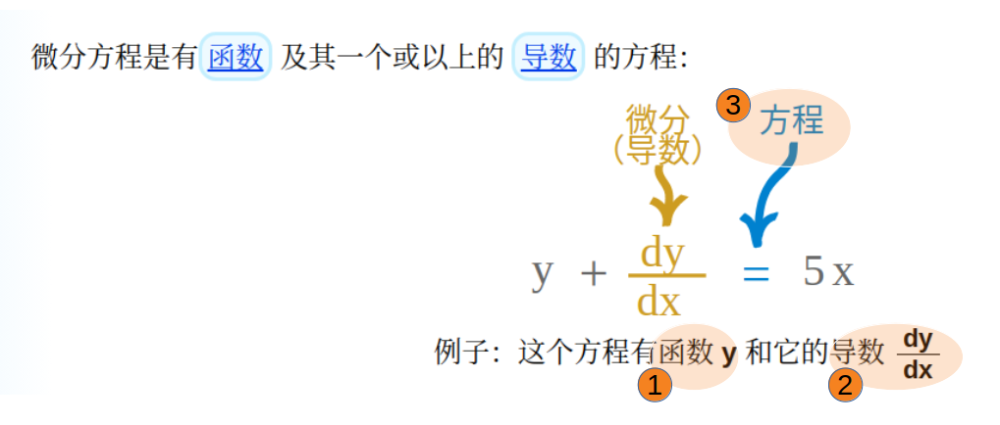
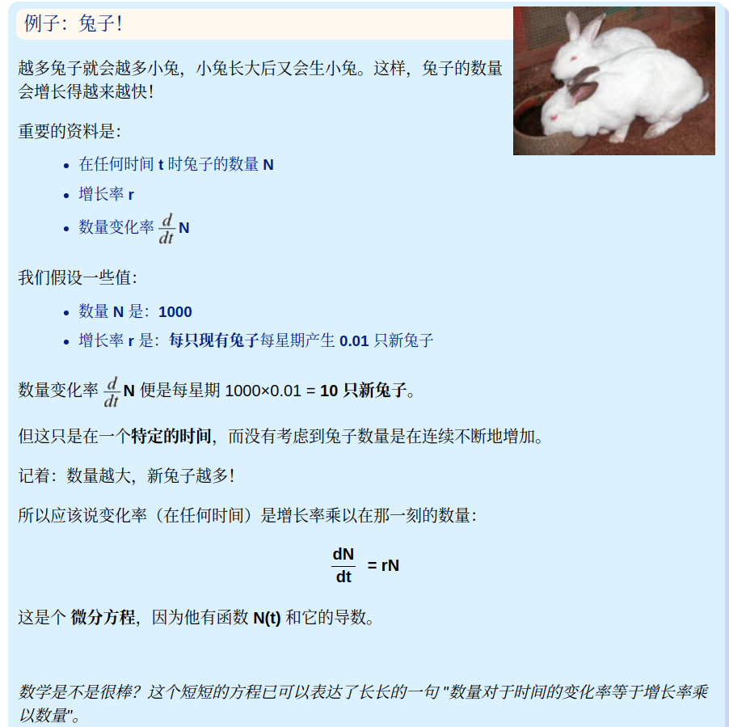
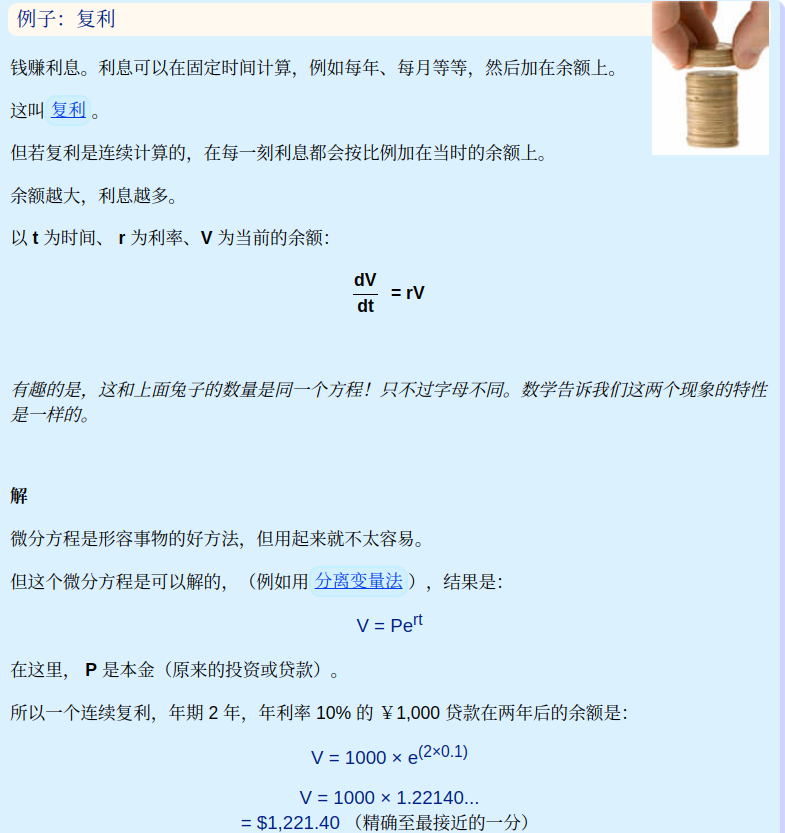
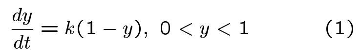
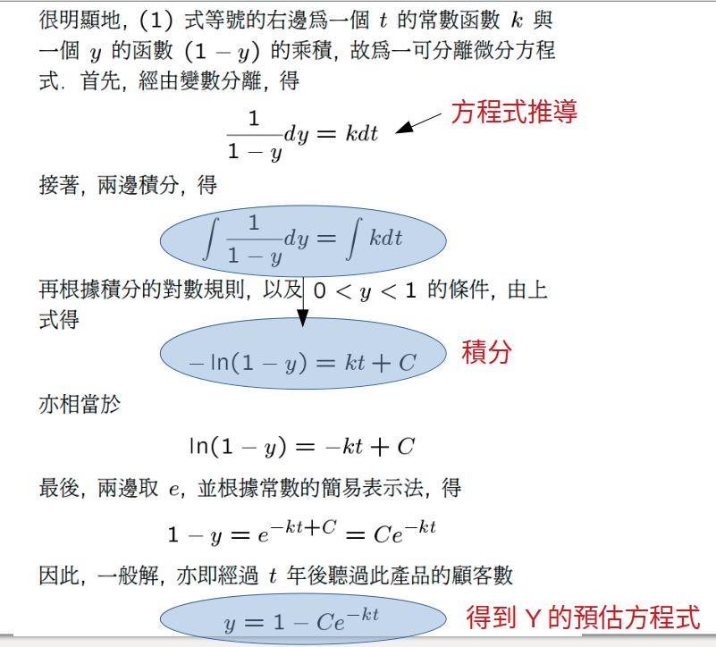
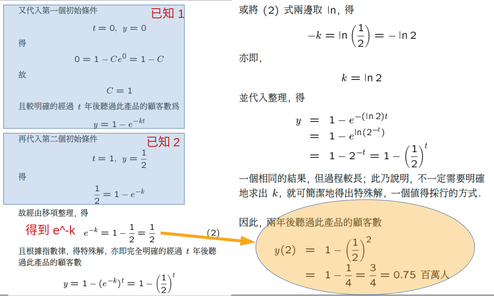

Concept
「微分方程式（differential equation）」：
含有某些未知函數（unknown function）及其導函數（可能不含未知函數自身，但必含未知函數的導函數）的方程式。
微分方程（Differential Equation ）起源與應用 :
許多科學與工程問題皆可以微分方程加以描述與解決，例如：
- 衛星、拋射體、火箭、行星等運動問題之應用
- 某電路之電流與電壓特性探討
- 熱傳導之研究
- 放射性物質衰減週期的決定
- 化學反應與人口成長的研究等等
- 一般而言，這類問題皆遵守一定之科學定律，
且問題常包含某因子隨其他因子之變化改變狀
況之變化率，因此在數學模型化的過程即會產生微分方程。
Definition
微分方程(differential equation)有3個因素組成
- (1) 函式Y
- (2) 一個以上的導數(Derivative),對那個變數做微分
- (3) 是個方程式(有等於)
解微分方程的意思是求函数 y（或函数 y 的集合）

Meaning
在这个世界上，事物不停变动，而微分方程往往就是形容这些变动的好方法
微分方程可以形容人口变化、热量移动、弹簧震动、放射性物体衰变及很多其他现象。微分方程是形容宇宙里很多事物的正常并合理的方法

微分方程是表达事物的好方法，但用起来并不容易。
所以我们在解微分方程时，尝试把微分方程转变为比较简单的代数式方程（没有微分）。这样我们便可以计算、画图、预测、等等。
這個例子和上面的不同是他要算總數
=> 以複利的case V 當時的金額 是會一直在變化的
分离变量法(The method of separation of variables)

Example
例 1. 今透過廣告推銷某新產品給一百萬的潛在顧客. 若
聽到廣告的顧客數的變化率與未聽到廣告的顧客數成正比.
又一年後有半數的顧客聽過此種產品, 試問兩年後有多少
顧客聽過此種產品?
<解> 此問題是探討聽過廣告的顧客數, 且題目所提供的
訊息是聽到廣告的顧客數的變化率, 故根據導函數的變化
率意義, 令 y 為經過 t 年後聽過此產品的顧客數 (單位:
百萬), 則 (1 - y) 為未聽到廣告的顧客數, 並由題意與
成正比的定義,

其中 k 為一個未知的比例常數, 且根據常識以及題意得兩
個初始
t = 0, y = 0
t = 1, y = 1/2
因此, 原問題乃相當於求上述微分方程式滿足初始條件的
特殊解, 亦即經過 t 年後聽過此產品的顧客數 y, 並求兩
年後聽過此產品的顧客數 y(2).
推導出算式

開始求解
